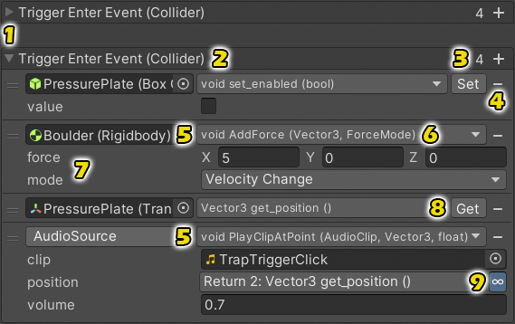

You can either declare and invoke an UltEvent in your own script or use a Premade Event Script.
Declaration and Invocation
You can declare an UltEvent like any other serialized field you want to show in the inspector:
// Public field:
public UltEvents.UltEvent myEvent;
// Private field with the [SerializeField] attribute:
[SerializeField]
private UltEvents.UltEvent _MyEvent;
You will also need to call myEvent.Invoke() to trigger the event when you want it to execute.
If you want to automatically catch and log any exceptions, you can call InvokeSafe() instead.
Listeners
An UltEvent has two sets of listeners:
- Persistent listeners are configured in the Unity Editor using the Inspector.
- Dynamic listeners are added using code at runtime.
You can add a persistent listener using the [+] button or by dragging and dropping an object from the Hierarchy window or Project window onto the event.
If an event has multiple calls, you can drag them around to change their execution order. Execution starts at the top and travels down the list.
Configuring an UltEvent
The following image and table explain the various parts of an UltEvent's Inspector:

| # | Details |
|---|---|
| 1 | UltEvents are collapsed by default to save screen space and can be expanded using the foldout arrow. |
| 2 | The name of the event field is shown in the header along with its parameter types. |
| 3 | The number of persistent listeners is shown in the top right next to the + button to add another one. |
| 4 | The - button next to a listener removes it. |
| 5 | Each persistent listener has a target object (for instance methods) or a type reference (for static methods). When a new call is added, it will be given the component containing the event as its default target. To change to a type reference you can selectStatic Method from the method selection menu (#6) or simply click on the field and press the Delete key. To change back to a target object, you can simply drag and drop it onto the field or select it using the Object Picker just to the right of the type field. |
| 6 | Each persistent listener also has a target method which you select from a dropdown menu. The sub-menus near the top of the method selection menu allow you to select methods from any other components on the same [?] button which will assign another existing method with the most similar name according to a metric known as Levenshtein Distance. |
| 7 | Once you select a method, it will show the names of each of its parameters alongside fields where you can specify the values you want the event to pass into that method. |
| 8 | If the selected member is a field or property, it will show a button to toggle between getting or setting its value. |
| 9 | If a parameter matches one of the event's parameters or the return type of an earlier listener, it will show a Collider parameter as shown at #2, but the position parameter of #9 is linked to the return value of the get_position call at #8 (the getter of the Transform.position property) so that the sound will be played at the current location of the Pressure Plate instead of at a fixed position. See Event Parameters and Linked Return Values for more details. |